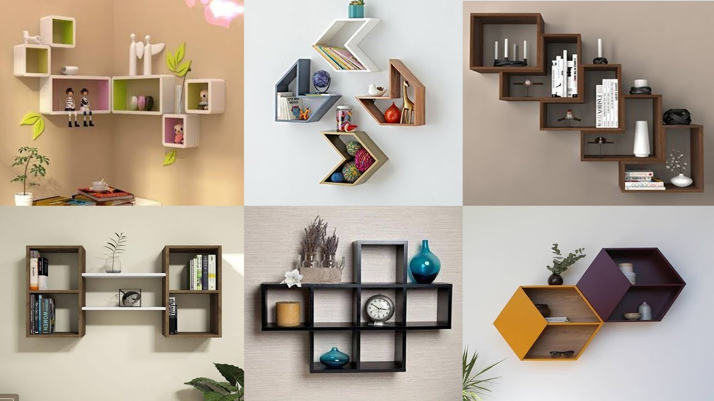

Компьютерный дизайн


Дизайн - берет свое начало в Италии. Уже позднее похожее понятие "design", формируется в Англии, которое уже прижилось и данный термин используется по настоящее время. На русский язык термин "design", переводится как: узор, чертеж или проектировать и конструировать.
Дизайн складывается в процессе развития художественных программ, а также инженерного проектирования. Дизайн развивается не только на проектировании, но и захватывает особенности социума и эстетические качества. То есть проектирует и создает объекты комфортные для предметной среды человека, например, социально культурной, общественной, производственной и жилой.
В настоящее время дизайн - это совокупность нескольких проектных деятельностей, объединяя в себе как технические, так и гуманитарные знания, закрепляя все художественным мышлением, далее формируя на производстве объект размышления.
Главная задача дизайна и дизайнерской мысли - это, быть в одной плоскости с техническими и естественными знаниями. Все знания в этих сферах сливать воедино и брать за основу художественное, обзорное мышление.
© Архипова Карина
г. Копейск, 2020 г.
